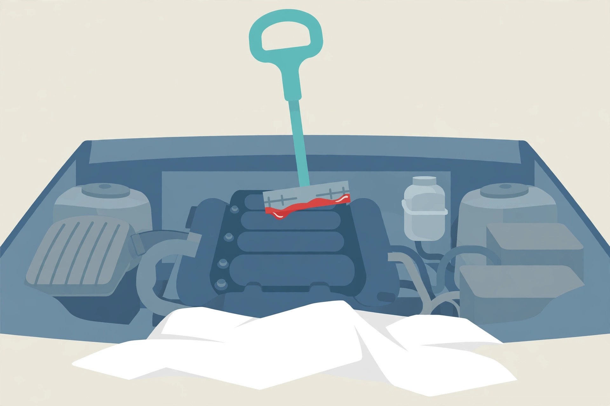

Checking RAV4 transmission fluid without a dipstick: the 2012 has one, so check it properly

Start with the misconception, because it sends owners under the wrong vehicle with the wrong procedure. Guides for checking transmission fluid without a dipstick describe sealed transmissions, and some of them apply that advice to RAV4s of every year. The 2012 RAV4 is not sealed. RAV4 model years 2001 to 2012 have a traditional transmission dipstick; the sealed design, with no dipstick at all, begins with the 2013 fourth generation. If your RAV4 is a 2012, the overflow plug procedures, temperature windows, and scan tool steps written for sealed units do not apply to your car. You have the easier job, as long as you do it at the right temperature.
⚠ Safety, read before you start. The level check is done with the engine idling and the fluid hot, so keep hands, sleeves, and the dipstick cloth clear of moving belts and hot surfaces, and wear gloves, as the factory procedure itself cautions. Work on a level surface with the parking brake set. Hot fluid burns; treat every reading as work around a hot liquid.
First, verify which transmission your RAV4 actually has
Model year settles the question, and it is worth settling before anything is opened, because the two designs share no steps at all:
- 2001 to 2012: a traditional dipstick in the engine bay. Level and condition are read from the stick, hot, with the engine running and the vehicle in Park.
- 2013 and later: a sealed design with no dipstick. There is nothing to pull, wipe, and read; the check moves underneath the vehicle, to an overflow plug, at a specified fluid temperature.
That split is the spec verification this topic actually needs. A 2012 owner who follows sealed unit advice will hunt for a plug that is not the level check on their car, and a 2013 owner who follows this page will hunt for a dipstick that does not exist. Check the year on your registration, then follow the matching half of this guide.
The dipstick hot check, step by step
The procedure below follows Toyota's repair manual for the U151E automatic transaxle fitted to this generation. It is short, and every step in it exists for a reason.
- Drive until everything is fully warm. The manual specifies a fluid temperature of 70 to 80 °C (158 to 176 °F), reached by driving the vehicle so the engine and transaxle are at normal operating temperature. A short idle in the driveway does not get the fluid there.
- Park on a level surface and set the parking brake. A slope tilts the fluid in the pan and falsifies the reading in whichever direction helps you least.
- With the engine idling and your foot on the brake, move the shift lever slowly through each position, from P to L, then return it to P. This circulation step fills the circuits that drain back when the transmission sits, so the stick reads the working level rather than the resting one.
- Pull the dipstick and wipe it clean. Use a lint-free cloth; fibres left in the tube are contamination you added yourself.
- Fully push the dipstick back in, then pull it out again and read it. The level should sit in the HOT range marked on the stick. That second insertion is the reading that counts, not the first pull.
- If the level sits below the HOT range, add fluid, in small amounts, then repeat steps 3 to 5 before adding more. Small additions and repeat readings are the whole technique; a large pour is how a low reading becomes an overfill.
What success looks like: two consecutive readings, taken the same way at full operating temperature, both landing inside the HOT range, with the fluid on the stick looking and smelling as the next section describes. One reading is an anecdote. Two matching readings are a level.
Reading the fluid itself: colour and smell
The dipstick tells you two things, and the level is only the first. The fluid should look red or light brown. Dark brown or black fluid, especially with a burnt smell, signals overdue service or internal wear, and it changes the decision from "top up and drive" to "plan a service and look closer." The site's step-by-step drain-and-fill guide covers that service in full, and the symptoms guide covers what dark fluid paired with shift complaints usually means.
Read a low level the same way, as information rather than an errand. Fluid does not evaporate. A transmission that reads low has lost fluid somewhere, and the level check that finds it has done you a favour: the loss can be traced while it is still a seep, at the pan, the seals, or the cooler lines, instead of after the level drops far enough to change how the transmission behaves.
2013 and later: why the sealed check is a different job
On a sealed Toyota transmission, the level is checked by warming the fluid to a specified temperature, removing the overflow plug on the bottom of the pan with the engine idling, and judging the level by what runs out. For the sealed units described in trade coverage of this procedure, the check window is 36 to 46 °C, monitored with a scan tool or by the AT OIL TEMP warning light, and the detailed instructions live in the repair manual for that specific transmission.
Two cautions follow, and both matter more than the procedure itself. First, generic no-dipstick guides disagree with each other about the check temperature, quoting windows that cannot all be right, and none of those figures is a Toyota specification for the 2012, which has a dipstick in any case. Never borrow a temperature from a general guide and apply it to a specific transmission. Second, the sealed check is a workshop procedure by design: the vehicle is raised, the engine is idling, and the fluid temperature has to be measured rather than guessed. Owners of 2013 and later RAV4s should treat a level concern as a shop visit with the repair manual open, not as a driveway version of the dipstick check above.
The decision, by model year
- 2012 or earlier, level in the HOT range, fluid red to light brown: record the date and mileage and carry on. You have done the inspection Toyota's schedule is built around.
- 2012 or earlier, level low: add the correct fluid in small amounts to the HOT range, then find the loss before it finds you.
- 2012 or earlier, fluid dark brown or black, or burnt smelling: the check has become a service decision. Start with the drain-and-fill guide linked above.
- 2013 or later, any level concern: sealed unit, overflow procedure, specified temperature, repair manual in hand. That is a shop job for most owners, and there is no dipstick shortcut around it.
The 2012's dipstick is a genuine advantage, one of the last Toyota gave RAV4 owners. It only pays out if the check is done the factory way: hot, idling, after the gear sweep, and read in the HOT range.
— Owen Park, Automotive Writer